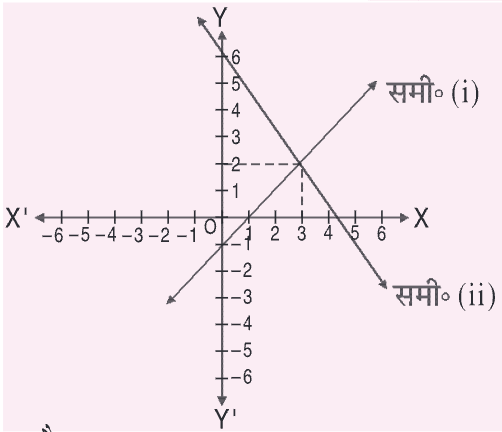

| वर्ग | 0–10 | 10–20 | 20–30 | 30–40 | 40–50 |
|---|---|---|---|---|---|
| बारंबारता | 15 | 20 | 45 | 15 | 25 |
तीनों बिंदुएँ संरेख हैं, अतः त्रिभुज का क्षेत्रफल = 0।
अतः k = −2 (उत्तर)
उत्तर : 29/15
अतः HCF(365, 12450) = 5
इसके विपरीत मान लें कि 5 − 2√3 परिमेय है, अर्थात्
दाहिनी ओर परिमेय संख्या है, इसलिए √3 भी परिमेय होना चाहिए। परंतु √3 अपरिमेय है — यह विरोधाभास है। अतः 5 − 2√3 परिमेय संख्या नहीं है। (सिद्ध)
भाग करने पर —
भागफल = 3x − 5 और शेषफल = 9x + 10
उत्तर : 0
उत्तर : 65
उत्तर : 624
उत्तर : x = −4/3, −3/2
अतः सूर्य का उन्नयन कोण = 60°
उत्तर : 77 cm²
उत्तर : 486 cm²
उत्तर : 4092 cm²
उत्तर : 1/36
चूँकि D < 0, अतः समीकरण का कोई वास्तविक मूल नहीं है। (मूल अवास्तविक हैं)
प्रथम पद = 5, द्वितीय पद = a+d = 1
समीकरण (i): y = x − 1 के लिए मान सारणी —
| x | 0 | 1 | 2 | 3 |
|---|---|---|---|---|
| y | −1 | 0 | 1 | 2 |
समीकरण (ii): y = 8 − 2x के लिए मान सारणी —
| x | 0 | 1 | 2 | 3 |
|---|---|---|---|---|
| y | 8 | 6 | 4 | 2 |
दोनों रेखाएँ बिंदु (3, 2) पर मिलती हैं।
अतः x = 3 और y = 2 (उत्तर)

माना चौड़ाई = x मी, तब लंबाई = (2x+1) मी।
चौड़ाई = 16 मी, लंबाई = (2×16+1) = 33 मी
दिया है: △ABC ~ △DEF
अतः परिमापों का अनुपात संगत भुजाओं के अनुपात के बराबर है। (सिद्ध)
| वर्ग-अंतराल | 0-20 | 20-40 | 40-60 | 60-80 | 80-100 |
|---|---|---|---|---|---|
| बारंबारता | 5 | 6 | 16 | 12 | 11 |
सर्वाधिक बारंबारता 40–60 वर्ग में है, अतः बहुलक वर्ग = 40–60।
उत्तर : बहुलक ≈ 54.29